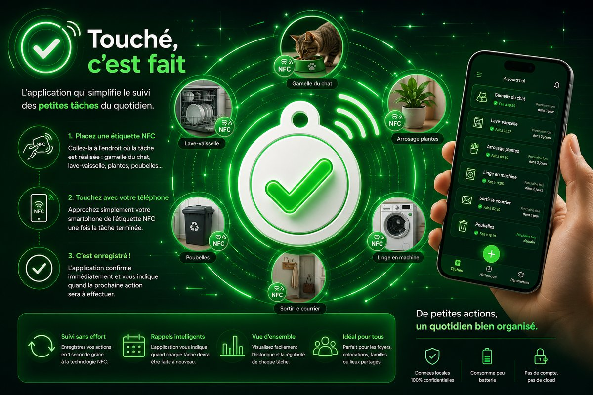

On fait la tâche, on touche l'étiquette, c'est enregistré.
Le principe, en trois gestes
Collez une étiquette
Là où la tâche se fait : gamelle du chat, lave-vaisselle, plante, poubelles…
Touchez-la avec votre téléphone
Une fois la tâche terminée. Une seconde, pas de formulaire.
C'est fait
L'application confirme et vous dit quand il faudra recommencer. Tout le groupe le voit.
Aperçu

Ce qui change
Le geste avant l'appli
Pas de liste à ouvrir, pas de saisie. L'étiquette rappelle le geste au bon endroit.
À qui le tour
Répartition équitable calculée tâche par tâche. Sans points, sans classement, sans compétition.
Un état commun
Chacun voit ce qui reste à faire. Fini le « je croyais que tu l'avais fait ».
Vos données restent chez vous
Pas de compte, pas de pub, pas de traceurs. L'étiquette ne contient qu'un identifiant aléatoire.
Des exemples
Animaux
Nourrir le chat matin et soir, renouveler l'eau, nettoyer la litière.
Poubelles
Sortir le bac jaune le jeudi, le verre une fois par mois.
Plantes
Arroser sans noyer ni oublier.
Entretien
Changer un filtre tous les 90 jours, détartrer la cafetière, tester un détecteur.
L'intention derrière
Les tâches courtes sont faciles à faire, mais difficiles à coordonner. Les applications de tâches sont abandonnées parce qu'il faut les ouvrir et les remplir.
Alors on a supprimé la saisie. L'action numérique est associée à son emplacement physique : l'étiquette rappelle le geste au bon endroit et permet de l'enregistrer en une seconde.
Pas d'intelligence artificielle, pas de points, pas de classement. « Touché, c'est fait » est un outil d'organisation domestique — pas un dispositif de surveillance ni de preuve.
Do the task, tap the sticker, it's logged.
Three gestures
Stick a sticker
Right where the task happens: the cat's bowl, the dishwasher, a plant, the bins…
Tap it with your phone
Once the task is done. One second, no form to fill in.
It's done
The app confirms and tells you when it's due again. The whole household sees it.
Preview
What changes
The gesture, not the app
No list to open, no typing. The sticker reminds you of the task in the right place.
Whose turn
Fair sharing computed task by task. No points, no leaderboard, no competition.
One shared picture
Everyone sees what's left to do. No more "I thought you'd done it".
Your data stays yours
No account, no ads, no trackers. A sticker only holds a random identifier.
Examples
Pets
Feed the cat morning and evening, refresh the water, clean the litter.
Bins
Take the recycling out on Thursday, the glass once a month.
Plants
Water them without drowning or forgetting them.
Upkeep
Change a filter every 90 days, descale the coffee machine, test a smoke alarm.
The intention behind it
Short tasks are easy to do but hard to coordinate. Task apps get abandoned because you have to open them and fill them in.
So we removed the typing. The digital action is tied to its physical place: the sticker reminds you of the task where it happens, and logs it in one second.
No artificial intelligence, no points, no leaderboard. "Touché, c'est fait" is a home organisation tool — not a surveillance or proof device.